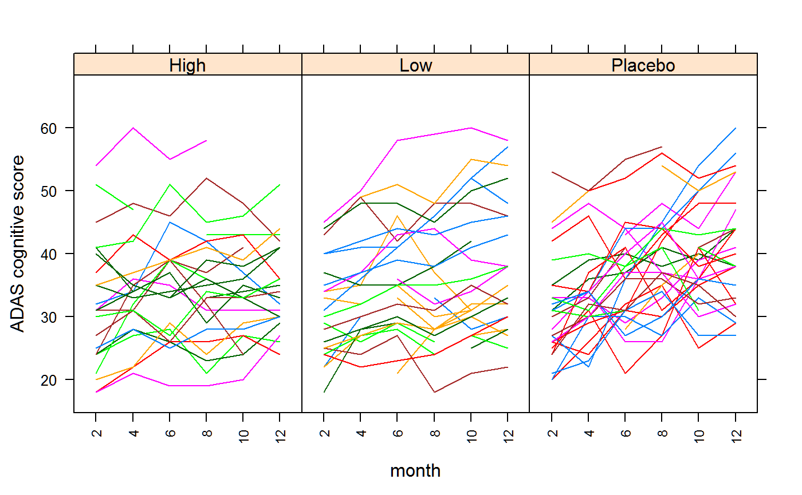
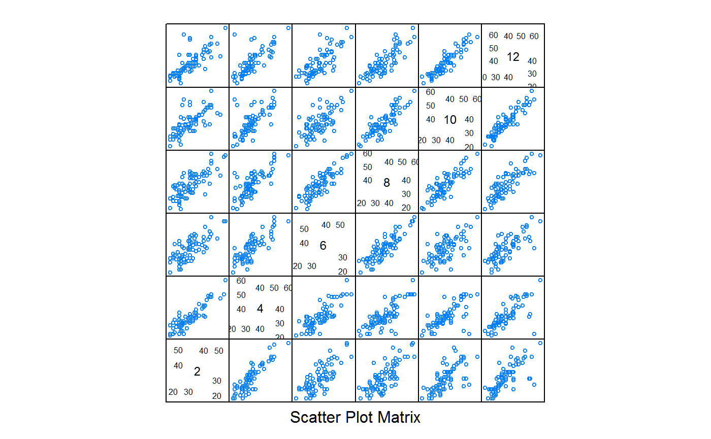
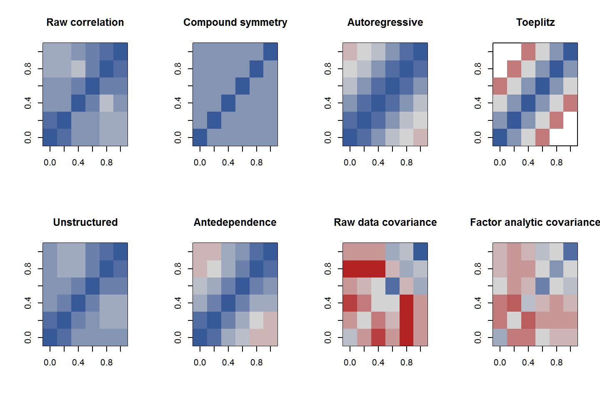

r-side.RmdAlzheimer’s patients were randomized to one of three treatments (Low, High, Placebo). Each patient was given a cognitive evaluation every two months during the year using the Alzheimer’s Disease Assessment Scale (ADAS). The cognitive scores range from 0 to 70, higher values indicate greater severity of the disease.
Note: this is a re-working of Example 8.3, Disease Progression in Alzheimer’s Trial, found in Walker and Shostack (2010).
First, attach necessary packages, source in the R code for the rmat() functions, and read in the data in the wide-format shown in the SAS book.
The data is found in the covardat package. The nlme function works much more smoothly with a groupedData object, so create that too.
data(alzheimers)
dat <- alzheimers
dat <- transform(dat, patient=factor(patient),
month=factor(month))
require(nlme)## Loading required package: nlmeIn the following plot, each line represents one patient, and shows the change in cognitive score over time.
require(lattice)
xyplot(score ~ month|trt , data=dat, groups=patient,
xlab="month", ylab="ADAS cognitive score", type='l',layout=c(3,1),
scales=list(x=list(rot=90, cex=.75, alternating=FALSE)))
The following scatterplot matrix will provide some guidance for models. Each point represents one patient. The correlation of observed values is much higher for months that are adjacent than for months that are farther apart. It is this correlation which can be captured in a model.
## Loading required package: reshape2## Using score as value column: use value.var to override.
In the compound symmetry (also called uniform correlation), all off-diagonal elements of the correlation matrix have the same value.
PROC MIXED;
CLASS trt month patient;
MODEL score = trt month trt*month;
repeated / subject=patient(trt) type=cs rcorr;
Estimated R Correlation Matrix for patient(treat)
Row Col1 Col2 Col3 Col4 Col5 Col6
1 1.0000 0.8038 0.8038 0.8038 0.8038 0.8038
2 0.8038 1.0000 0.8038 0.8038 0.8038 0.8038
3 0.8038 0.8038 1.0000 0.8038 0.8038 0.8038
4 0.8038 0.8038 0.8038 1.0000 0.8038 0.8038
5 0.8038 0.8038 0.8038 0.8038 1.0000 0.8038
6 0.8038 0.8038 0.8038 0.8038 0.8038 1.0000
Covariance Parameter Estimates
Cov Parm Subject Estimate
CS pat(treat) 64.6927
Residual 15.7919
The RCORR option tells SAS to print the R-side correlation matrix. Since each patient receives only one treatment and the patient numbers are unique, the repeated statement could be simplified to subject = patient, indicating that there are repeated measurements on each subject (i.e. patient).
The lme() function requires the inclusion of random effects. Since this example has no random effects, the gls() function is used instead of lme.
# CS - nlme
# 'gls' needs a groupedData data. Otherwise it shows only 5 columns in R
cs1 <- gls(score ~ trt * month, data=datg,
correlation=corCompSymm(form = ~ 1 | patient),
na.action=na.omit)
logLik(cs1)*2 # match to SAS## 'log Lik.' -2743.479 (df=20)## Denom. DF: 436
## numDF F-value p-value
## (Intercept) 1 1509.5778 <.0001
## trt 2 0.8429 0.4312
## month 5 28.2073 <.0001
## trt:month 10 2.3011 0.0122## Correlation Structure: Compound symmetry
## Formula: ~1 | patient
## Parameter estimate(s):
## Rho
## 0.803791For any patient, the correlation of observations at (any) two times is about 0.80.
In order to make this a bit more clear, the rcor() function was created to print the R matrix (similar to RCORR option in SAS). The lucid() function is used to simplify interpretation.
## Loading required package: lucid## [,1] [,2] [,3] [,4] [,5] [,6]
## [1,] 1 0.804 0.804 0.804 0.804 0.804
## [2,] 0.804 1 0.804 0.804 0.804 0.804
## [3,] 0.804 0.804 1 0.804 0.804 0.804
## [4,] 0.804 0.804 0.804 1 0.804 0.804
## [5,] 0.804 0.804 0.804 0.804 1 0.804
## [6,] 0.804 0.804 0.804 0.804 0.804 1In contrast to SAS and lme(), asreml() requires the specification of the full residual matrix in the rcov argument. The term patient:cor(month) is shorthand notation for an identity matrix (of size equal to the number of patients), direct-product with a uniform correlation matrix for month,
\[ R = I \otimes C_{\mbox{month}} \]
# CS - asreml
dat <- dat[order(dat$patient, dat$month), ]
require(asreml)
cs2 <- asreml(score ~ trt * month, data=dat,
rcov = ~ patient:cor(month), trace=FALSE)
summary(cs2)$varcomp## gamma component std.error z.ratio constraint
## R!variance 1.000000 80.485103 10.92939077 7.364098 Positive
## R!month.cor 0.803791 0.803791 0.02925262 27.477568 UnconstrainedThe estimated correlation from asreml is the same as from lme. Internally, asreml stores the estimated parameters of the R matrix as a list, each item in the list representing one of the direct-product terms specified by rcov. To understand this more clearly, the following code uses rcor() to format the estimated parameters as a matrix. A dedicated print method for this object shows the formula and prints the upper-left corner of each matrix.
## ~patient:cor(month)
## patient [1:6] :
## 1 2 3 4 5 6
## 1 1 0 0 0 0 0
## 2 0 1 0 0 0 0
## 3 0 0 1 0 0 0
## 4 0 0 0 1 0 0
## 5 0 0 0 0 1 0
## 6 0 0 0 0 0 1
## month:
## 2 4 6 8 10 12
## 2 1 0.804 0.804 0.804 0.804 0.804
## 4 0.804 1 0.804 0.804 0.804 0.804
## 6 0.804 0.804 1 0.804 0.804 0.804
## 8 0.804 0.804 0.804 1 0.804 0.804
## 10 0.804 0.804 0.804 0.804 1 0.804
## 12 0.804 0.804 0.804 0.804 0.804 1
## variance:
## [1] 1The correlation matrix just for ‘month’ can be shown this way.
## 2 4 6 8 10 12
## 2 1 0.804 0.804 0.804 0.804 0.804
## 4 0.804 1 0.804 0.804 0.804 0.804
## 6 0.804 0.804 1 0.804 0.804 0.804
## 8 0.804 0.804 0.804 1 0.804 0.804
## 10 0.804 0.804 0.804 0.804 1 0.804
## 12 0.804 0.804 0.804 0.804 0.804 1The auto-regressive model has only one parameter to estimate, but the form of the correlation matrix is an exponential decay in the correlation as the time between two observations increases.
PROC MIXED;
CLASS trt month patient;
MODEL score = trt month trt*month;
repeated / subject=patient(trt) type=ar(1);
Type 3 Tests of Fixed Effects
Num Den
Effect DF DF F Value Pr > F
trt 2 77 0.94 0.3952
month 5 359 11.21 <.0001
trt*month 10 359 1.43 0.1671# nlme
ar1 <- gls(score ~ trt * month, data=datg,
correlation=corAR1(form = ~ 1 | patient),
na.action=na.omit)
anova(ar1)## Denom. DF: 436
## numDF F-value p-value
## (Intercept) 1 1569.2752 <.0001
## trt 2 1.0145 0.3634
## month 5 11.8304 <.0001
## trt:month 10 1.4784 0.1445## Correlation Structure: AR(1)
## Formula: ~1 | patient
## Parameter estimate(s):
## Phi
## 0.8757637## [,1] [,2] [,3] [,4] [,5] [,6]
## [1,] 1 0.88 0.77 0.67 0.59 0.52
## [2,] 0.88 1 0.88 0.77 0.67 0.59
## [3,] 0.77 0.88 1 0.88 0.77 0.67
## [4,] 0.67 0.77 0.88 1 0.88 0.77
## [5,] 0.59 0.67 0.77 0.88 1 0.88
## [6,] 0.52 0.59 0.67 0.77 0.88 1# asreml
ar2 <- asreml(score ~ trt*month, data=dat,
rcov = ~ patient:ar1(month), trace=FALSE)
vc(ar2)## effect component std.error z.ratio constr
## R!variance 83.45 10.21 8.2 P
## R!month.cor 0.8801 0.01593 55 U## 2 4 6 8 10 12
## 2 1 0.88 0.77 0.68 0.6 0.53
## 4 0.88 1 0.88 0.77 0.68 0.6
## 6 0.77 0.88 1 0.88 0.77 0.68
## 8 0.68 0.77 0.88 1 0.88 0.77
## 10 0.6 0.68 0.77 0.88 1 0.88
## 12 0.53 0.6 0.68 0.77 0.88 1The factor analytic model increases the number of parameters with a vector of loadings and variances.
# Factor analytic
dat <- dat[order(dat$patient, dat$month),]
fa2 <- asreml(score ~ trt*month, data=dat,
rcov = ~ patient:facv(month,1), trace=FALSE)
vc(fa2)## effect component std.error z.ratio constr
## R!variance 1 NA NA F
## R!month.2.fa1 7.91 0.7664 10 U
## R!month.4.fa1 7.381 0.7271 10 U
## R!month.6.fa1 7.588 0.7336 10 U
## R!month.8.fa1 8.607 0.7305 12 U
## R!month.10.fa1 8.195 0.7808 10 U
## R!month.12.fa1 8.566 0.8047 11 U
## R!month.2.var 17.02 3.323 5.1 U
## R!month.4.var 15.83 3.136 5 U
## R!month.6.var 16.33 3.183 5.1 U
## R!month.8.var 10.64 2.478 4.3 U
## R!month.10.var 16.08 3.245 5 U
## R!month.12.var 17.53 3.626 4.8 U## 2 4 6 8 10 12
## 2 79.6 58.4 60 68.1 64.8 67.8
## 4 58.4 70.3 56 63.5 60.5 63.2
## 6 60 56 73.9 65.3 62.2 65
## 8 68.1 63.5 65.3 84.7 70.5 73.7
## 10 64.8 60.5 62.2 70.5 83.2 70.2
## 12 67.8 63.2 65 73.7 70.2 90.9Even though the extractor function is called rcor(), it is actually returning the covariance matrix, not the correlation matrix. Compare this to the pairwise covariance matrix of the observed data:
## 2 4 6 8 10 12
## 2 74 61.9 51.2 60.9 46.9 60.8
## 4 61.9 70.2 57.3 64.3 48.4 60.7
## 6 51.2 57.3 71.7 69.1 46.8 63.2
## 8 60.9 64.3 69.1 87.8 65.5 77.5
## 10 46.9 48.4 46.8 65.5 76.2 74.9
## 12 60.8 60.7 63.2 77.5 74.9 94.3PROC MIXED;
CLASS trt month patient;
MODEL score = trt month trt*month;
repeated / subject=patient(trt) type=toep rcorr;# TO - asreml. This model is 'delicate' and might need help.
# Try starting values, rcov = ~ patient:corb(month, k=4, init=rep(.5,4)))
# Or: fit corb( , k=2) and then update the model to corb( , k=4)
# Or: fit cor(), then update to corb()
to2 <- asreml(score ~ trt*month, data=dat,
rcov = ~ patient:corb(month, k=4, init=rep(.5,4)),
trace=FALSE)
noquote(lucid(rcor(to2)$month, dig=2))## 2 4 6 8 10 12
## 2 1 0.81 0.6 0.42 0.19 0
## 4 0.81 1 0.81 0.6 0.42 0.19
## 6 0.6 0.81 1 0.81 0.6 0.42
## 8 0.42 0.6 0.81 1 0.81 0.6
## 10 0.19 0.42 0.6 0.81 1 0.81
## 12 0 0.19 0.42 0.6 0.81 1Variates observed at successive times are said to have an antedependence structure of order r if each ith variate (i>r), given the preceding r, is independent of all further preceding variates. The antedependence model is designed to be close to the unstructured model, and involves far fewer parameters. The covariance matrix for the antedependence structure C is defined as a function of a diagonal matrix D and a matrix U which has elements all zero apart from the diagonal elements (which are all 1) and, for the order 1 structure, one off diagonal element. For an order 2 structure, U has two off diagonal elements. Specifically, \(C = (U D^{-1} U' )^{-1}\). Asreml produces the diagonal elements of \(D^{-1}\) and the non-zero elements of U.
PROC MIXED;
CLASS trt month patient;
MODEL score = trt month trt*month;
repeated / subject=patient(trt) type=ante rcorr;dat <- dat[order(dat$patient, dat$month),]
an2 <- asreml(score ~ trt*month, data=dat,
rcov = ~ patient:ante(month, 1), trace=FALSE)
noquote(lucid(rcor(an2)$month, dig=2))## 2 4 6 8 10 12
## 2 1 0.9 0.74 0.65 0.56 0.51
## 4 0.9 1 0.82 0.72 0.62 0.57
## 6 0.74 0.82 1 0.87 0.75 0.69
## 8 0.65 0.72 0.87 1 0.86 0.79
## 10 0.56 0.62 0.75 0.86 1 0.92
## 12 0.51 0.57 0.69 0.79 0.92 1The most general correlation matrix allows for a separate correlation between each pair of months.
PROC MIXED;
CLASS trt month patient;
MODEL score = trt month trt*month;
repeated / type=un subject=patient(trt) rcorr;
PROC MIXED Using Unstructured Covariance (UN)
Type 3 Tests of Fixed Effects
Num Den
Effect DF DF F Value Pr > F
trt 2 77 0.94 0.3967
month 5 77 21.55 <.0001
trt*month 10 77 2.08 0.0357
Estimated R Correlation Matrix for patient(treat)
Row Col1 Col2 Col3 Col4 Col5 Col6
1 1.0000 0.9005 0.7703 0.8002 0.7763 0.7773
2 0.9005 1.0000 0.8179 0.7995 0.7521 0.7261
3 0.7703 0.8179 1.0000 0.8738 0.7223 0.7418
4 0.8002 0.7995 0.8738 1.0000 0.8628 0.8273
5 0.7763 0.7521 0.7223 0.8628 1.0000 0.9206
6 0.7773 0.7261 0.7418 0.8273 0.9206 1.0000 # UN nlme
un1 <- gls(score ~ trt * month, data=datg,
correlation=corSymm(form = ~ 1 | patient),
na.action=na.omit)
logLik(un1)*2 # DOES NOT match SAS## 'log Lik.' -2657.776 (df=34)## Denom. DF: 436
## numDF F-value p-value
## (Intercept) 1 1560.5016 <.0001
## trt 2 0.9554 0.3855
## month 5 23.3903 <.0001
## trt:month 10 2.1315 0.0211## [,1] [,2] [,3] [,4] [,5] [,6]
## [1,] 1 0.9 0.79 0.8 0.79 0.75
## [2,] 0.9 1 0.84 0.8 0.76 0.68
## [3,] 0.79 0.84 1 0.87 0.73 0.71
## [4,] 0.8 0.8 0.87 1 0.86 0.8
## [5,] 0.79 0.76 0.73 0.86 1 0.91
## [6,] 0.75 0.68 0.71 0.8 0.91 1In asreml, a general correlation matrix (with arbitrary off-diagonal elements) is specified with corg.
# UN asreml. Need starting values to get convergence
un2 <- asreml(score ~ trt * month, data=dat,
rcov = ~ patient:corg(month, init=rep(.8,15)),
trace=FALSE)
anova(un2)## Wald tests for fixed effects
##
## Response: score
##
## Terms added sequentially; adjusted for those above
##
## Df Sum of Sq Wald statistic Pr(Chisq)
## (Intercept) 1 124476 1545.37 < 2e-16 ***
## trt 2 108 1.33 0.51309
## month 5 9308 115.57 < 2e-16 ***
## trt:month 10 1703 21.14 0.02013 *
## residual (MS) 81
## ---
## Signif. codes: 0 '***' 0.001 '**' 0.01 '*' 0.05 '.' 0.1 ' ' 1## 2 4 6 8 10 12
## 2 1 0.9 0.78 0.8 0.77 0.77
## 4 0.9 1 0.83 0.8 0.75 0.72
## 6 0.78 0.83 1 0.87 0.71 0.73
## 8 0.8 0.8 0.87 1 0.85 0.82
## 10 0.77 0.75 0.71 0.85 1 0.91
## 12 0.77 0.72 0.73 0.82 0.91 1Note that in this example, it was necessary to specify starting values in order for asreml to converge. Ideally, the strategy would be to fit a simpler model, such as the uniform correlation model, and then update to the full model. Something like
Unfortunately, this did not work.
All models can be compared using the AIC() function, but we need to define a logLik() method for asreml() objects.
logLik.asreml <- function(object,...){
# Kevin Wright
val <- object$loglik
# Note that object$gammas includes parameters fixed at 1.0 and therefore
# length(object$gammas) is NOT the number of parameters. Instead, look
# at object$gammas.con to see how many non-fixed parameters there are.
# Fixed parameters are denoted by code '4'.
p <- sum(object$gammas.con!=4)
attr(val,"df") <- p
# Note, for REML methods, nobs=N-p. This does not seems to be the same
# as nedf (residual degrees of freedom), but when I use 'nedf' I am
# able to match the table of BIC values in the asreml manual (Chapter 11).
attr(val,"nobs") <- object$nedf
class(val) <- "logLik"
return(val)
}
AIC(cs2, ar2, fa2, to2, an2, un2)## df AIC
## cs2 2 1946.165
## ar2 2 1900.840
## fa2 12 1957.899
## to2 5 1961.419
## an2 11 1905.500
## un2 16 1884.605The smallest AIC value comes from the unstructured model.
To see visually how well the models capture the structure of the data, the observed and estimated correlations and covariances can be plotted. The correlation matrices all have the same scale. The covariance matrices have a common scale (different from the correlation matrices).
op <- par(mfrow=c(2,4))
# Correlations
RedGrayBlue <- colorRampPalette(c("firebrick", "lightgray", "#375997"))
image(cor(datw, use="pair"), zlim=c(0.2,1), col=RedGrayBlue(13))
title("Raw correlation")
image(rcor(cs2)$month, zlim=c(0.2,1), col=RedGrayBlue(13))
title("Compound symmetry")
image(rcor(ar2)$month, zlim=c(.2,1), col=RedGrayBlue(13))
title("Autoregressive")
image(rcor(to2)$month, zlim=c(.2,1), col=RedGrayBlue(13))
title("Toeplitz")
image(rcor(un2)$month, zlim=c(.2,1), col=RedGrayBlue(13))
title("Unstructured")
image(rcor(an2)$month, zlim=c(.2,1), col=RedGrayBlue(13))
title("Antedependence")
# Cov
image(cov(datw, use="pair"), zlim=c(45,95), col=RedGrayBlue(13))
title("Raw data covariance")
image(rcor(fa2)$month, zlim=c(45,95), col=RedGrayBlue(13))
title("Factor analytic covariance")